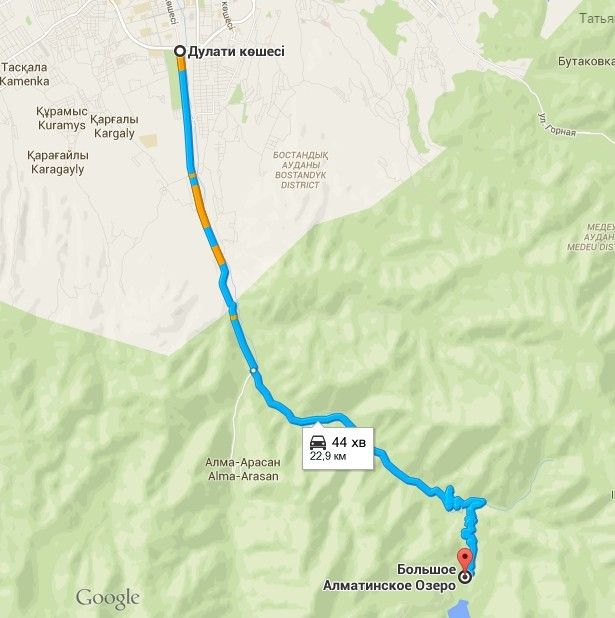

Большое Алматинское Озеро — высокогорный водоём, расположенный в Заилийском Алатау на высоте 2511м над уровнем моря, в 15 км южнее от центра Алма-Аты. Котловина озера тектонического происхождения, сложной формы, с общим уклоном на север. Длина озера 1,6 км, ширина от 0,75 до 1 км.Длина береговой линии 3 км, глубина 30-40 м, объём водной массы 14 млн м³.Максимальный уровень воды в августе, минимальный в феврале. Колебания уровня достигают 20 м. Берега озера обрывистые и крутые. С юга в озеро впадает река Большая Алматинка Является частью Иле-Алатауского национального парка. Доступ туристов в приграничную, пограничную зону границы Казахстана с Киргизской Республикой расположенную выше озера осуществляется без ограничений, наличие пропуска от МВД не требуется. На расстоянии 7-12 км от границы в глубину территории Республики Казахстан исключено действие пограничного режима. Иностранные граждане и лица без гражданства могут посещать данные приграничные участки с целью туризма. Режим доступа регулируется Постановлением Правительства Республики Казахстан от 31 июля 2015 года № 60.
Большое Алматинское озеро находится в 15 км от городской черты Алматы. Выезжать из города удобнее всег опо улице Дулати. От перекрестка ул. Саина и Дулати следовать 9,4 км по направлению к горам, затем плавно повернуть на развилке налево и проехать по дороге еще 14,3 км. Не доезжая трубы повернуть налево на Проходное ущелье (по указателю «Отель Альпийская роза») и ехать еще 1,1 км. В общей сложности дорога занимает не бльшое часа-полутора. По пути будет экопост – там следует уплатить экол гический сбор (400 тг.).
